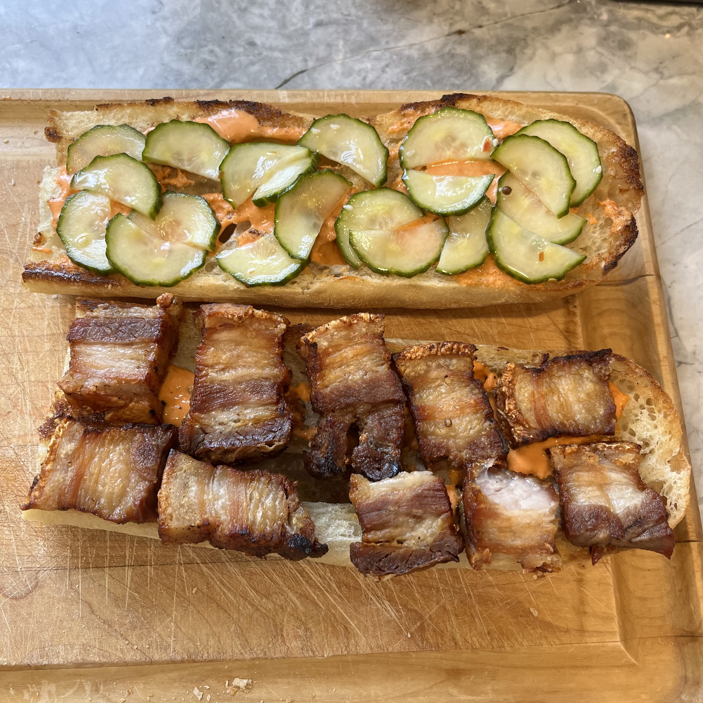
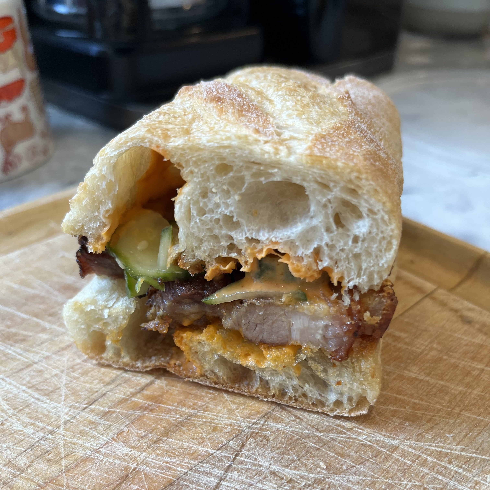

Banh Mi
Pork (Start Two Days Before):
Dry the skin with a paper towel then score it.
Season with sugar, salt, pepper, msg, cover, and refrigerate overnight.
Roast in heavy pan for 30 min at 450 then an hour at 275.
Let it cool to room temp then wrap tightly in plastic wrap and refrigerate until cool.
Slice into pieces and brown until crispy.
Pickles (Start One Day Before):
Thinly slice a cucumber and cut in half if you want. I did
Heat up water, rice wine vinegar, sugar, salt, and chili flakes.
I also threw some coriander and sesame seed in there.
Like half cup water and half cup vinegar.
Like one tablespoon sugar and one tablespoon salt.
Throw whatever else you want in there. I could see some fresh ginger, fresh garlic being good.
Maybe some soy sauce or sesame oil too.
I just wanted it to be acidic and a little spicy anything else would probably also be good.
Pour over cucumbers in mason jar and refrigerate for the night.
Spicy Mayo Sauce:
Just mix one part sriracha with one part mayo and then whatever else.
I put some rice vinegar, msg, onion powder, toasted sesame oil in there. Do whatever.
Other sauce I have not tried but might be good:
Heat some water, fish sauce, sriracha, sugar and reduce. Add some fresh garlic as it cools and that's it.
I have zero idea on measurements I will figure it out when I make it.
Bread:
I'm not making a baguette so just buy one and toast well.
Assembly:
Grab toasted baguette.
Put the sauce on both pieces.
Put on pieces of pork.
Throw on the pickles.
Can add some other veggies on top. Some julienned radish or carrot.
Some freshly sliced jalapeno or fresno. Maybe some cilantro or parsley. Doesn't matter do whatever you want.
I'd reccomend rolling it in aluminim foil or something because it makes sure nothing falls out